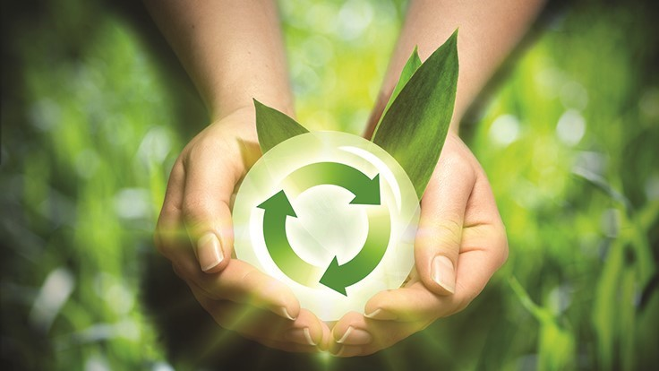
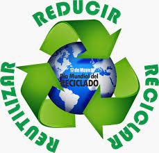

Impacto ambiental
La basura tecnológica, o e-waste, contiene metales pesados y sustancias químicas como plomo, mercurio y cadmio, que son altamente tóxicos. Cuando no se reciclan adecuadamente, estos elementos pueden filtrarse en el suelo y contaminar los cuerpos de agua, afectando a ecosistemas enteros. La acumulación de estos contaminantes puede dañar la flora y fauna locales y provocar cambios en los ciclos biológicos de los ecosistemas.
Beneficio del reciclaje: Al reciclar la basura tecnológica, se reduce la extracción de recursos naturales y la contaminación ambiental, conservando así los recursos y limitando el impacto de estos materiales tóxicos en la naturaleza.
Impacto en la salud humana
La exposición a los elementos tóxicos que contiene la basura electrónica representa un riesgo grave para la salud. Cuando los dispositivos tecnológicos se desechan incorrectamente, trabajadores y comunidades cercanas pueden inhalar o entrar en contacto con estas sustancias peligrosas, lo que aumenta el riesgo de padecer enfermedades respiratorias, daños neurológicos y otros problemas de salud crónicos.
Beneficio del reciclaje: La gestión adecuada de e-waste mediante procesos de reciclaje reduce la exposición humana a estas sustancias, protegiendo tanto a los trabajadores involucrados como a las comunidades aledañas a los centros de procesamiento.
Impacto Económico

El reciclaje de basura tecnológico ofrece un beneficio económico significativo, ya que permite recuperar materiales valiosos como oro, cobre y aluminio. Estos materiales se reutilizan en la fabricación de nuevos productos, lo que reduce los costos de producción y la demanda de recursos naturales. Además, el reciclaje tecnológico impulsa la creación de empleos en sectores de gestión de residuos y reciclaje, promoviendo una economía circular.
Beneficio del reciclaje: Este tipo de economía no solo mejora la eficiencia en el uso de recursos, sino que también fomenta oportunidades de empleo y genera ingresos a partir de materiales reciclados, haciendo que la industria de reciclaje de basura tecnológica sea tanto sustentable como económicamente viable. .